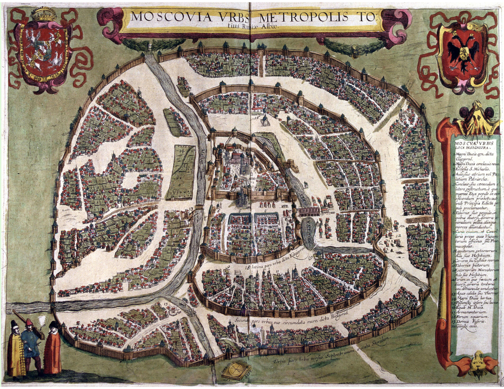

Название
Название государства происходит от словосочетания «Белая Русь», известного с середины XIII века и употреблявшегося по отношению к различным регионам Руси. До конца XV века большинство упоминаний о «Белой Руси» (Alba Russia) происходит из Западной Европы и относится к территории Новгородской республики[19]. По отношению к части современной территории Белоруссии, а именно к подвинской земле (современная Витебская область), название «Белая Русь» впервые стало употребляться с середины XIV века[20]. В XV—XVI веках термин также относился к Московскому государству[21].
Существует 3 основных версии происхождения названия «Белая Русь». По одной из них население, проживавшее на территории нынешней Белоруссии, носило одежду из светлой холщовой ткани. Вкупе со светлыми волосами и глазами это производило впечатление чистоты, света, поэтому и назвали данную часть Руси «Белой». По другой версии до этой земли практически не доходили татаро-монгольские завоеватели, и термин «Белая Русь» употреблялся в значении — свободная. По третьей версии «Белой» данную территорию назвали из-за широкого распространения христианства, по сравнению с языческой Чёрной Русью[22][23].
С 1620-х годов термин начал закрепляться за восточными (подвинско-поднепровскими) землями Великого княжества Литовского[24]. Для обозначения жителей Белой Руси в этот период употреблялся термин «белорусцы»[22]; одновременно с ним продолжали использоваться политоним «литвины»[25] и этноним «русины»[26].
Первой административно-территориальной единицей, которая содержала в своём официальном названии термин «Беларусь» было Белорусское генерал-губернаторство (1796) в составе Российской империи[27]. Идею создания самостоятельного государства (не государственных образований), которое имело бы титульное название «Беларусь», выдвинул в конце 1915 года Вацлав Ластовский[24]. Первым государством, которое имело название «Беларусь», стала Белорусская Народная Республика (1918—1919). В 1919 году была образована Белорусская Советская Социалистическая Республика. 19 сентября 1991 года в связи с распадом СССР и образованием суверенного государства название было изменено на Республику Беларусь[28].
В начале XX века во время становления белорусского национального движения предлагались и другие варианты названия страны, например, Крывия[29]. По сообщению этнографа Ефима Карского, название «Белоруссия» не было известно простонародью региона[30].
История
Древнейшая история
К верхнему палеолиту в Белоруссии относятся стоянки Юровичи и Бердыж.
Формирование первых политических объединений на белорусских землях относят к VI—IX векам[32]. Этот процесс тесно связан с расселением славян. В результате слияния культур пришлых славян и местных балтов возникли союзы племён, среди них — кривичи, дреговичи, радимичи, ятвяги, литва.
Древнерусское государство
К концу IX века относят появление государства Рюриковичей, известного как Древнерусское государство или Киевская Русь. Важная роль в формировании государства принадлежит торговому пути «из варяг в греки», часть которого проходила и по территории современной Белоруссии. Правителями Руси велась жестокая борьба с местными племенными княжескими династиями, предпринимались неоднократные военные походы.
Около двух—трёх столетий в VII—X веках продолжался многократный приток в уже освоенные славянами различные местности Восточно-Европейской равнины многочисленных групп славянских переселенцев из Моравского Подунавья, сыгравший существенную роль в консолидации славянского населения Восточной Европы и завершившийся формированием древнерусской народности[33].
В 872 году[34] — произошёл поход Аскольда на полочан.
Около 988 года великим князем Владимиром было совершено Крещение Руси, уже в 992 году была основана епархия в Полоцке, а в 1005 — в Турове.
В XI веке Полоцкое княжество вышло из зависимости от Киева. Наиболее известным правителем княжества был Всеслав. К середине XII века Киевская Русь окончательно закрепилась в состоянии раздробленности и фактически распалась на полтора десятка отдельных княжеств. В результате монгольского нашествия 1237—1240 годов многие русские земли были полностью разорены. Нашествие незначительно затронуло современные белорусские земли.
В Великом княжестве Литовском
В 1240-х годах в результате подчинения ряда литовских и русских земель князем Миндовгом возникло Великое княжество Литовское. Его образование происходило в сложных военно-политических условиях: с востока и юга присутствовала угроза со стороны монголов, с запада — крестоносцев. В 1251 году Миндовг принял крещение, а через два года — королевскую корону. После разгрома крестоносцев в битве при Дурбе в 1260 году Миндовг порвал с христианской верой, вернувшись к язычеству, и возобновил борьбу с Тевтонским и Ливонским орденами[35].
В начале XIV века Великое княжество Литовское представляло собой полиэтничное многоконфессиональное государство со столицей в Вильне (ныне — Вильнюс), включающее в себя Литву, часть Руси и Жемайтию. Великие князья литовские вели частые войны с крестоносцами и татарами. Наиболее успешными из князей были Гедимин, Ольгерд и Витовт, значительно расширившие территорию государства за счёт завоеваний и дипломатии. Внутренняя политика великих князей литовских строилась на принципах «права старины»[36].
Кревская уния
В 1385 году была заключена Кревская уния, по которой великий князь литовский Ягайло становился также и королём польским, обязавшись при этом крестить остававшиеся языческими литовские земли. Не сумев удержать власть в Литве, Ягайло уступил её своему двоюродному брату Витовту, во время почти сорокалетнего правления которого Великое княжество Литовское достигло наивысшего могущества.
В 1529 году был издан Статут Великого княжества Литовского — свод законов, содержавший правовую основу государства[37]. В 1566 и 1588 годах Статут был издан в новых редакциях.
В Речи Посполитой
В 1569 году, в ходе Ливонской войны, Великое княжество Литовское вынуждено было пойти на заключение Люблинской унии с Польским королевством. В результате унии было создано федеративное государство, известное как Речь Посполитая. При этом Великое княжество Литовское не ликвидировалось и сохраняло известную самостоятельность. Усилились процессы полонизации местной элиты, постепенно перенимавшей польский язык и культуру. В 1697 году языком делопроизводства окончательно стал польский, сменивший официально использовавшийся до этого западнорусский язык, именуемый в белорусской историографии как старобелорусский.
Государственной религией Речи Посполитой был католицизм, большинство же населения современных белорусских территорий оставались православными. В 1596 году была заключена Брестская церковная уния, в результате которой большинство православных иерархов Великого княжества Литовского признало власть папы римского и католические догматы с условием сохранения православной обрядности. Хотя уния вызывала активное сопротивление многих православных, к концу XVIII века большинство жителей современной территории Белоруссии были униатами, представители же высшего сословия в большинстве своём были католиками.
Во второй половине XVII—XVIII веков Речь Посполитая постепенно слабела и попала в политическую зависимость к Российской империи, что в конце концов привело к разделу государства между Россией, Пруссией и Австрией.
В 1795 году Великое княжество Литовское прекратило существование, а его территория вошла в состав Российской империи.
В Российской империи
Земли Великого княжества Литовского вошли в Российскую империю в качестве шести губерний Белорусского генерал-губернаторства и Литовского генерал-губернаторства (часто кратко именовавшихся «Белоруссия и Литва»), которые иногда неформально называли Северо-Западный край. Территория современной Белоруссии пострадала в ходе войны 1812 года: при сравнении итогов двух ревизий — довоенной 1811 года и послевоенной 1815 года — отмечено снижение численности населения на белорусских землях на 6 %[38].
В начале 1820-х годов на современной территории Белоруссии часто отмечались сильные неурожаи, которые приводили к массовому голоду. От повальной смерти крестьян в значительной степени спасал картофель, ставший одной из основных полевых культур.
После польского восстания 1830 года, охватившего в том числе западную часть современной территории Белоруссии, российские власти начали проводить политику русификации края с целью упразднения польского влияния[39]. В 1839 году униатская церковь в Российской империи была ликвидирована. В 1840 году было отменено действие Статута Великого княжества Литовского. После польского восстания 1863 года политика русификации на белорусских землях была значительно усилена.
В середине XIX века начало формироваться белорусское национальное движение, зародилась белорусская литература. В этот же период началось научное изучение белорусских земель, организованное российскими властями. В результате социально-экономической модернизации начала развиваться промышленность, наблюдался демографический рост.
В 1914 году началась Первая мировая война, Российская империя вступила в войну на стороне Антанты. С начала войны в Барановичах, а с 8 августа 1915 года — в Могилёве располагалась Ставка Верховного главнокомандующего. В августе — сентябре 1915 года Германия оккупировала западную часть Северо-Западного края, и фронт на этом участке стабилизировался.
Революция и Гражданская война в Белоруссии
В 1917 году в результате Февральской революции власть в Петрограде перешла к Временному правительству. В марте 1917 в Минске состоялся съезд белорусских национальных организаций, который выдвинул требования государственной автономии Белоруссии в составе Российской Федеративной Демократической Республики и избрал исполнительный орган — Белорусский национальный комитет (БНК). В июле 1917 состоялся съезд белорусских организаций и партий, вместо БНК была создана Центральная рада белорусских организаций, реорганизованная в Великую белорусскую раду.
В октябре — ноябре 1917 года в результате Октябрьской революции власть на неоккупированных территориях перешла в руки Советов, уже в ноябре в Минске состоялись съезды Советов, созданы советские исполнительные органы Западной области (Облисполкомзап и СНК). 7 (20) декабря 1917 года начался Первый Всебелорусский съезд, который, не признав легитимность созданных органов, декларировал передачу власти Исполнительному комитету, после чего в нём отказались участвовать большевики, и съезд был ими разогнан.
3 марта 1918 года в Брест-Литовске (ныне Брест) был подписан мирный договор, согласно которому в добавление к уже оккупированной территории запада Белоруссии под германский контроль была передана бо́льшая часть остальной части белорусской этнической территории. В этих условиях деятелями белорусского национального движения 25 марта 1918 года была провозглашена независимость Белорусской Народной Республики, однако она не получила дипломатического признания.
После ухода немецких войск Красной армией была занята бо́льшая часть территории Белоруссии. Среди коммунистов не было единого мнения насчёт целесообразности создания отдельной белорусской советской республики. Против её создания выступали представители Облисполкомзапа и СНК Западной области. Их взгляды формировались под влиянием идеи мировой социалистической революции, а в самоопределении народов и образовании национальных государств они видели препятствие на пути к ней. Они аргументировали это тем, что белорусы не являются самостоятельной нацией, и поэтому принцип самоопределения им не подходит. «За» выступали белорусские коммунистические организации (Белнацком и белорусские секции при РКП(б)), поддержанные впоследствии руководством РСДРП(б). В Смоленске в ночь с 1 на 2 января 1919 года был обнародован Манифест об образовании Советской Социалистической Республики Белоруссия в составе РСФСР. 8 января столица ССРБ была перенесена в Минск (занятый без боя Красной армией ещё 10 декабря 1918 года). 31 января 1919 года республика вышла из состава РСФСР, в Минске 2 и 3 февраля 1919 года проходил I Всебелорусский съезд Советов, где была принята Конституция.
27 февраля 1919 года ССРБ была расформирована: Смоленская, Витебская и Могилёвская губернии были включены в состав РСФСР, а остальные территории Советской Белоруссии объединились с Литовской Советской Республикой в Литовско-Белорусскую ССР (Литбел).
В марте 1919 года войска Литовской Тарибы, поддержанные немецкими оккупационными гарнизонами, начали военные действия в Литве.
На эти территории также претендовала и вновь образованная Польша, что привело весной — летом 1919 года к образованию советско-польского фронта. В результате польского наступления Литбел был оккупирован польскими войсками и фактически прекратил своё существование 19 июля 1919 года.
После занятия Красной армией значительной части территории Белоруссии 31 июля 1920 года в Минске была вновь провозглашена Белорусская Социалистическая Советская Республика. По условиям Рижского договора, заключённого без участия БССР, Западная Белоруссия отошла Польской Республике.
В СССР
1920—1930-е годы
В 1922 году БССР вошла в состав Советского Союза. В марте 1924 года ЦИК СССР принял решение о передаче БССР 15 уездов и отдельных волостей Витебской, Гомельской и Смоленской губерний. Территория БССР увеличилась до 110 584 км², население — до 4,2 млн человек. 70,4 % населения составляли белорусы.
В 1926 году в Москве было решено передать БССР Гомельский и Речицкий уезды[40]. Территория БССР увеличилась на 15 727 км², а население — на 649 тыс. человек.
В 1920—1930-е годы в Советской Белоруссии активно шли процессы индустриализации. К началу индустриализации в БССР проживало 3,4 % населения и производилось всего 1,6 % промышленной продукции СССР. Развивались преимущественно лёгкая, пищевая, деревообрабатывающая и химическая промышленности, а начиная со второй пятилетки — машиностроение и производство строительных материалов. За 3 пятилетки промышленное производство в БССР выросло в 23 раза.
В середине 1920-х в БССР активно проводилась белорусизация — комплекс мер по расширению сферы применения белорусского языка и развитию белорусской культуры. До 1936 года официальными языками БССР наряду с белорусским и русским были польский и идиш. В БССР в 1932—1938 годах существовала польская национальная автономия Дзержинский польский национальный район.
В 1930-е годы политика белорусизации была свёрнута. В 1933 году с целью сближения белорусского языка с русским была проведена языковая реформа. Политика развития хуторов 1920-х годов сменилась активной коллективизацией 1930-х.
В ходе сталинских репрессий многие представители интеллигенции и зажиточные крестьяне были расстреляны, сосланы в Сибирь и Среднюю Азию. Из 540—570 литераторов, печатающихся в Белоруссии в 1920—1930-х годах, было репрессировано не менее 440—460 (80 %)[41]. Количество прошедших через лагеря оценивается примерно в 600—700 тыс. человек[42], расстрелянных — не менее 300 тыс. человек. Определённую часть репрессированных составляли поляки из ликвидированного в 1938 году Польского национального района, депортированные в Казахстан и Сибирь.
Территория Западной Белоруссии и прилегающие к ней украинские, литовские и польские территории вошли в состав четырёх воеводств Польши. После выборов 1922 года 11 депутатов и 3 сенатора от западно-белорусских земель образовали «Белорусский депутатский клуб», целью которого было защита интересов белорусского населения Польши. В октябре 1923 года на правах автономной организации в составе Компартии Польши (КПП) была организована Коммунистическая партия Западной Белоруссии (КПЗБ). В 1925 году была образована и вскоре приобрела массовый характер Белорусская крестьянско-рабочая громада. В 1926 году в Польше был установлен авторитарный режим санации, после чего лидеры БКРГ, являвшиеся депутатами польского Сейма, были арестованы, а в марте БКРГ была запрещена. В 1928 году в Сейм от белорусских земель был выбраны 10 депутатов-белорусов и 2 сенатора, в 1930-м — всего один белорусский депутат, а в 1935-м и 1938-м — ни одного[43]. В 1934 году в городе Берёзе-Картузской действовал польский концентрационный лагерь в качестве места внесудебного интернирования противников правящего режима на срок до трёх месяцев. В 1938 году решением Коминтерна КПП и в КПЗБ были распущены, позднее многие из бывших руководителей КПЗБ были репрессированы советской властью.
Польское правительство не соблюдало положения Рижского договора о равноправии всех этнических групп. К марту 1923 года из 400 существовавших белорусских школ осталось 37, при этом росло число польских школ. В 1938—1939 годах оставалось только пять общеобразовательных белорусских школ. 1300 православных церквей были преобразованы в католические, нередко с применением насилия. В середине 1930-х годов 43 % западных белорусов были по-прежнему неграмотны, а студентов-белорусов во всей Польше не насчитывалось и двух сотен.
Мировой экономический кризис 1929—1939 годов тяжело отразился на Западной Белоруссии: многие десятки тысяч жителей Западной Белоруссии эмигрировали в Западную Европу и Америку[44].
Вторая мировая война и Великая Отечественная война
1 сентября 1939 года нацистская Германия, положив начало Второй мировой войне, атаковала Польшу с запада. 17 сентября, действуя в рамках секретного протокола к пакту Молотова — Риббентропа, Советский Союз вторгся в Польшу с востока. Восточная Польша была оккупирована и аннексирована СССР, который южную часть этой территории передал Украинской ССР (Западная Украина), остальная территория, которая стала частью Польши после заключения в 1921 году Рижского договора и в СССР в межвоенный период называлась Западной Белоруссией, была почти полностью присоединена к Белорусской ССР: небольшая северо-западная часть этих территорий, около 20 % входившего в их состав Виленского края, вместе с Вильно (что также было предусмотрено секретный протоколом пакта Молотов-Риббентроп) была отдана Литовской Республике в обмен на четыре советские военные базы в соответствии с Договором о взаимопомощи между Советским Союзом и Литвой[45][46][47][48]. После присоединения Западной Белоруссии на её территории были репрессированы 130 тыс. жителей, преимущественно этнических поляков.
22 июня 1941 года Германия напала на Советский Союз и уже в первые месяцы войны территория БССР оказалась под немецкой оккупацией, в результате которой погибли от 2,5 до 3 млн человек, что составляло 25-30 % всего населения страны на 1 января 1941 года[49][50][51][52]. Во время оккупации на территории страны развернулось крупнейшее в Европе партизанское движение. В июне — августе 1944 года в результате операции «Багратион» территория БССР была освобождена Красной армией.
Послевоенная Белоруссия
В 1945 году БССР стала одной из стран-основательниц Организации Объединённых Наций, при этом решения по всем вопросам белорусская делегация согласовывала с всесоюзными представителями.
В 1945 году Польше была возвращена Белостокская область.
После окончания войны на территории Белоруссии ещё несколько лет действовали антисоветские партизанские группы, как польские (Армия Крайова), так и немногочисленные белорусские, с некоторыми из них пытались установить связь западные спецслужбы. Отряды НКВД вели успешную борьбу против антисоветского подполья.
Послевоенные годы отметились быстрым восстановлением экономики. Быстро росло население, особенно городское.
В 1986 году на границе Белорусской и Украинской ССР произошла Чернобыльская катастрофа, радиационному загрязнению подверглась значительная часть территории БССР.
27 июля 1990 года была принята Декларация о государственном суверенитете Белорусской ССР, 25 августа 1991 года ей был придан статус конституционного закона, а 19 сентября республика обрела своё нынешнее название[53].
Республика Беларусь
После распада СССР и приобретения независимости Белоруссия стала парламентской республикой. Законодательной властью обладал Верховный совет, первым председателем которого был социал-демократ Станислав Шушкевич[54]. Исполнительная власть, в том числе контроль над силовыми ведомствами, находилась в руках Совета министров, который возглавлял Вячеслав Кебич, сохранивший свой пост с 1990 года. В 1992 году был введён белорусский рубль, началось формирование собственных вооружённых сил. В 1993 году Белоруссия ратифицировала Международный пакт о гражданских и политических правах.
В 1994 году была принята Конституция, а также прошли первые президентские выборы. Президентом был избран Александр Лукашенко, а Белоруссия была преобразована из парламентской республики в парламентско-президентскую. В 1995 году им был инициирован референдум, в результате которого русский язык получил статус государственного наравне с белорусским, был изменён герб и флаг, президент получил право роспуска парламента в случае систематического или грубого нарушения Конституции. Президент проводил курс на экономическую интеграцию с Россией[55].
К 1996 году в Белоруссии обострились противоречия между президентом и парламентом, и страна вступила в полосу политического кризиса. По инициативе президента был проведён второй референдум, по результатам которого в Конституцию были внесены изменения, существенно расширившие права президента и превратившие республику из парламентско-президентской в президентскую. Президент получил возможность издания декретов, имеющих силу закона, право на досрочный роспуск парламента, возможность формировать основной состав Конституционного суда и другие полномочия. Верховный совет был распущен, а из лояльных и нейтральных по отношению к президенту депутатов было сформировано двухпалатное Национальное собрание.
В 1997 году Белоруссия закончила вывоз со своей территории 72 межконтинентальных ракет СС-25 с ядерными боеголовками[56]. Белоруссия получила статус безъядерного государства.
После референдума 1996 года отсчёт 5-летнего срока президентства начат заново, так что следующие выборы состоялись только в 2001 году. Победу в первом туре одержал Александр Лукашенко.
В 2004 году был проведён новый референдум, в результате которого из Конституции были убраны ограничения на количество президентских сроков, и, таким образом, Александр Лукашенко получил право участвовать в последующих президентских выборах. 19 марта 2006 года он в третий раз был избран президентом Белоруссии.
19 декабря 2010 года состоялись четвёртые выборы президента, в результате которых Александр Лукашенко был переизбран на четвёртый срок.
В 2008, 2011 и 2014 годах в Белоруссии прошли финансовые кризисы, связанные с внешними шоками (в основном российской экономики), хроническим отрицательным внешнеторговым балансом страны и недостатками экономической политики[57].
В октябре 2015 года прошли пятые президентские выборы. Их победителем был объявлен Александр Лукашенко с рекордным результатом 83,49 %.
В августе 2020 года прошли шестые президентские выборы, по итогам которых Александр Лукашенко был переизбран на шестой президентский срок.
С начала специальной военной операции России на Украине в 2022 году российская армия с территории Белоруссии пересекла границу Украины в районе Киевской и Черниговской областей.
Государственное устройство
Белоруссия — унитарная республика президентского типа.
Республика Беларусь обладает верховенством и полнотой власти на своей территории, самостоятельно осуществляет внутреннюю и внешнюю политику, защищает свою независимость и территориальную целостность, конституционный строй, обеспечивает законность и правопорядок[9].
Основным законом государства является Конституция 1994 года с изменениями и дополнениями, принятыми на республиканских референдумах 24 ноября 1996 года, 17 октября 2004 года и 27 февраля 2022 года.
Основы государственного устройства закреплены в Конституции.
Основные институты белорусской государственности были сформированы в первые годы независимого развития страны. Вместе с тем, правовые нормы их функционирования претерпели значительные изменения в ходе преобразований середины 1990-х — начала 2000-х годов. Эти изменения осуществлялись как путём внесения поправок в Конституцию, так и через принятие пакета законов.
Президент
Главой государства является Президент, в настоящее время — Александр Лукашенко. Президент является также гарантом Конституции, прав и свобод человека и гражданина[9].
Президентом может быть избран гражданин Республики Беларусь по рождению, не моложе 40 лет, обладающий избирательным правом, постоянно проживающий в Республике Беларусь не менее 20 лет непосредственно перед выборами, не имеющий и не имевший ранее гражданства иностранного государства либо вида на жительство или иного документа иностранного государства, дающего право на льготы и другие преимущества.
Президент избирается сроком на 5 лет непосредственно народом Республики Беларусь на основе всеобщего, свободного, равного и прямого избирательного права при тайном голосовании. Одно и то же лицо может быть Президентом не более двух сроков.
Президент назначает республиканские референдумы, назначает очередные и внеочередные выборы в Палату представителей, Совет Республики и местные представительные органы, с предварительного согласия Палаты представителей назначает на должность премьер-министра, определяет структуру правительства Белоруссии, назначает судей судов общей юрисдикции и освобождает их от должности, осуществляет помилование осуждённых, ведёт переговоры и подписывает международные договоры, назначает на должность и освобождает от должности послов и постоянных представителей при международных организациях, подписывает законы, формирует и возглавляет Совет Безопасности, является Главнокомандующим Вооружёнными силами, осуществляет иные установленные Конституцией и законами полномочия, необходимые для реализации возложенных на него конституционных функций.
Президент на основе и в соответствии с Конституцией издаёт указы и распоряжения, имеющие обязательную силу на всей территории страны.Президент не может занимать другие должности, если иное не предусмотрено Конституцией, а также получать помимо заработной платы денежные вознаграждения, за исключением авторского вознаграждения за произведения науки, литературы и искусства[58].
В случае вакансии должности Президента или невозможности исполнения им своих обязанностей по основаниям, предусмотренным Конституцией, его полномочия до принесения Присяги вновь избранным Президентом переходят к Председателю Совета Республики.
Всебелорусское народное собрание
Всебелорусское народное собрание — высший представительный орган народовластия в Республике Беларусь, определяющий стратегические направления развития общества и государства, обеспечивающий незыблемость конституционного строя, преемственность поколений и гражданское согласие. Предельная численность делегатов составляет 1200 человек. Срок полномочий — 5 лет. Заседания проводятся не реже одного раза в год. Коллегиальным органом, обеспечивающим в порядке, установленном законом, оперативное решение вопросов, входящих в компетенцию Всебелорусского народного собрания, является Президиум. Всебелорусское народное собрание для реализации возложенных на него конституционных функций принимает решения, являющиеся обязательными для исполнения.
Законодательная власть
Согласно конституции, законодательную власть осуществляет Национальное собрание — парламент, состоящей из Палаты представителей и Совета Республики. Совет Республики является палатой территориального представительства. От каждой области и города Минска тайным голосованием избираются на заседаниях депутатов местных Советов депутатов базового уровня каждой области и города Минска по восемь членов Совета Республики. Президентом назначаются 8 членов Совета Республики. Членом Совета Республики пожизненно с его согласия является Президент, прекративший исполнение своих полномочий в связи с истечением срока его пребывания в должности либо досрочно в случае его отставки. Состав Палаты представителей — 110 депутатов. Избрание депутатов Палаты представителей осуществляется в соответствии с законом на основе всеобщего, свободного, равного, прямого избирательного права при тайном голосовании. Срок полномочий парламента — 5 лет. Полномочия парламента могут быть продлены на основании закона только в случае войны.
Исполнительная власть
Исполнительную власть в Белоруссии осуществляет правительство — Совет министров — центральный орган государственного управления. Оно в своей деятельности подотчётно президенту и ответственно перед парламентом. Правительство слагает свои полномочия перед вновь избранным президентом. Правительство состоит из премьер-министра, его заместителей и министров. В состав правительства могут входить и руководители других государственных органов и организаций. Совет Министров возглавляет Премьер-министр, в настоящее время эту должность занимает Роман Головченко.
Судебная власть
Судебная власть в Белоруссии осуществляется судами. Верховный суд Белоруссии возглавляет систему судов общей юрисдикции и является высшим судебным органом, который осуществляет правосудие посредством гражданского, уголовного и иных форм судопроизводства, предусмотренных законом.
Верховный суд работает в составе: Пленума, Президиума, коллегий по гражданским, уголовным, экономическим делам и делам интеллектуальной собственности. Количество судей и состав суда определяются президентом. С 4 января 1997 года должность председателя суда занимает Валентин Сукало[59].
В 1994 году в Белоруссии был учреждён Конституционный суд, в ведение которого из ведения Верховного суда были переданы вопросы, связанные с толкованием конституции и определением соответствия законодательных актов конституционным нормам. Председатель, заместитель Председателя и судьи Конституционного Суда избираются и освобождаются от должности Всебелорусским народным собранием. В настоящее время председателем Конституционного суда Белоруссии является Пётр Миклашевич, занявший эту должность в феврале 2008 года[60][61].
Государственная символика
Государственная символика Белоруссии[62] регламентируется Конституцией и действующим законодательством (Закон «О государственных символах Республики Беларусь»).
Государственный флаг Белоруссии представляет собой прямоугольное полотнище с пропорциями 2:1, разделённое на две горизонтальных полосы — красную наверху и зелёную внизу. Отношение ширины полос красного и зелёного цвета — 2:1. У древка вертикально расположен белорусский национальный орнамент красного цвета на белом поле, составляющем 1/9 длины флага без учёта припуска на карман или штакорину для крепления на древко (флагшток).
Государственный герб Республики Беларусь представляет собой размещённый в серебряном поле золотой контур Государственной границы Республики Беларусь, наложенный на золотые лучи восходящего над земным шаром солнца. Вверху поля находится пятиконечная красная звезда. Герб обрамлён венком из золотых колосьев, переплетённых справа цветками клевера, слева — цветками льна. Венок трижды перевит с каждой стороны красно-зелёной лентой, в средней части которой в основании Государственного герба Республики Беларусь в две строки начертаны золотом слова «Рэспубліка Беларусь».
Текущий государственный герб заменил герб «Погоня», использовавшийся с 19 сентября 1991 года и принятый на заседании Верховного Совета Белоруссии.
Государственный гимн Республики Беларусь представляет собой музыкально-поэтическое произведение, исполняемое в случаях, предусмотренных Законом «О государственных символах Республики Беларусь» и иными законодательными актами.
Государственные праздники
- 15 марта — День Конституции;
- 2 апреля — День единения народов Белоруссии и России;
- 9 мая — День Победы (нерабочий день);
- Второе воскресенье мая — День Государственного герба Республики Беларусь и Государственного флага Республики Беларусь;
- 3 июля — День Независимости (День Республики, нерабочий день);
- 17 сентября — День народного единства[64].
Общереспубликанские праздничные дни
- 1 и 2 января — Новый год (нерабочие дни);
- 23 февраля — День защитников Отечества и Вооружённых сил Республики Беларусь;
- 8 марта — День женщин (нерабочий день);
- 1 мая — Праздник труда (нерабочий день);
- 7 ноября — День Октябрьской революции[65] (нерабочий день).
Религиозные праздничные дни
- 7 января — Рождество Христово (православное Рождество) (нерабочий день);
- по календарю православной и католической конфессий — Пасха;
- по календарю православной конфессии — Радуница (нерабочий день);
- 2 ноября — День памяти;
- 25 декабря — Рождество Христово (католическое Рождество) (нерабочий день).
Внешняя политика
По специальному приглашению Конференции Объединённых Наций в Сан-Франциско, начавшей работу 25 июня 1945 года, БССР, УССР, Дания и Аргентина были приглашены стать членами ООН, таким образом войдя в число первоначальных членов — учредителей ООН.
После распада СССР Белоруссия является членом следующих межгосударственных образований:
- Содружество Независимых Государств,
- Союзное государство России и Белоруссии,
sex
agemale - Организация договора о коллективной безопасности,
- Евразийское экономическое сообщество,
- Единое экономическое пространство,
- Организация по безопасности и сотрудничеству в Европе,
- Программа НАТО «Партнёрство ради мира»,
- Международный валютный фонд,
- Всемирный банк.
Во время официального визита в Китай в декабре 2005 года президент Белоруссии Александр Лукашенко заявил, что Белоруссия в ближайшее время может быть принята в Шанхайскую организацию сотрудничества. О поддержке такого шага, по словам президента, заявили все страны ШОС.
В 1998 году имел место инцидент в Дроздах, когда дипломатические представительства были выселены из своих резиденций.